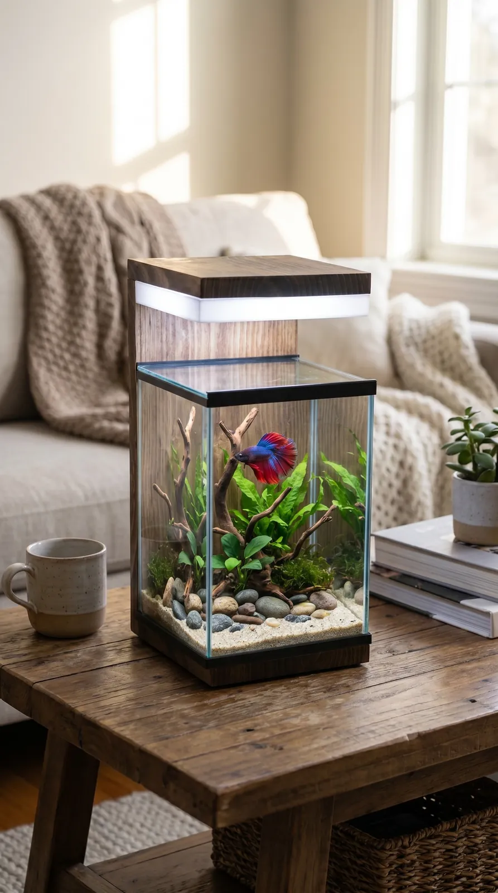
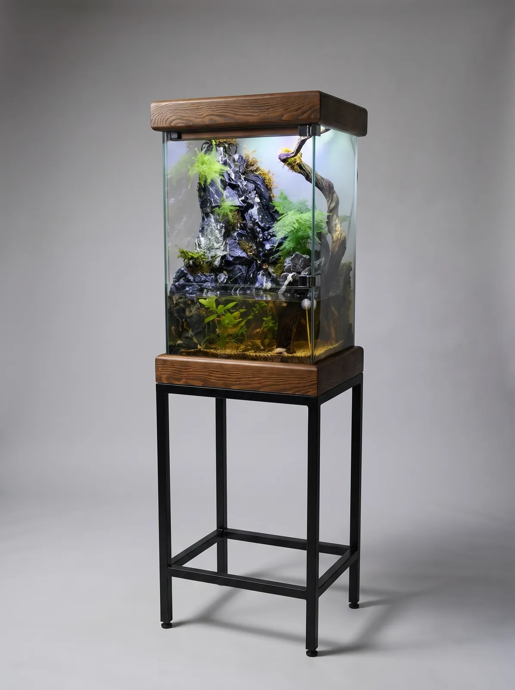
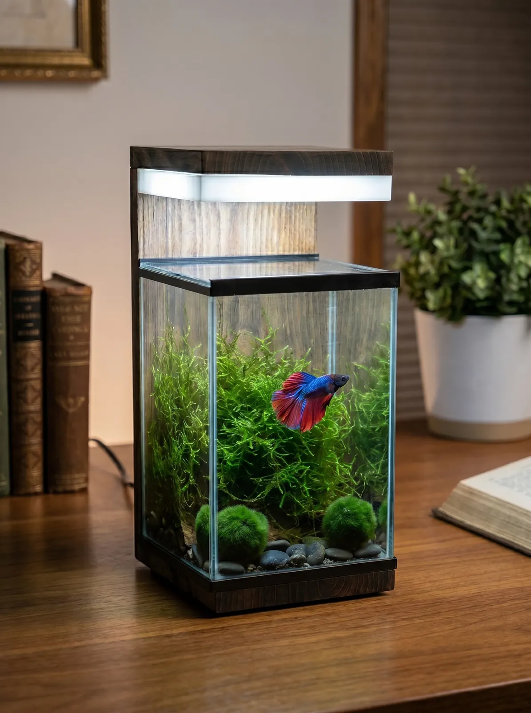

Akvaryum blogu: Ankara atölyemizden rehberler
Mobilyalı akvaryum seçiminden betta ve nano akvaryum kurulumuna, bakım rutinlerinden dekorasyon fikirlerine kadar Ankara Ostim'deki atölyemizde edindiğimiz deneyimleri paylaşıyoruz.

Ankara'da akvaryum alırken bilmeniz gereken her şey
Ankara'da akvaryum mu arıyorsunuz? Ölçü, cam, aydınlatma, mobilyalı akvaryum ve kurulum seçeneklerini karşılaştırın; Ostim atölyemizden ipuçları.
Devamını oku →
Mobilyalı akvaryum nedir? Evinize uygun modeli seçme rehberi
Mobilyalı akvaryum; akvaryum ile dolap, sehpa ya da konsolu tek parça birleştirir. Çeşitleri, avantajları, ölçü ve malzeme seçimi bu rehberde.
Devamını oku →
Betta akvaryumu nasıl kurulur? Adım adım rehber
Betta balığı için akvaryum kurulumu: hacim, sıcaklık, filtre, bitki seçimi ve su döngüsü. Yeni başlayanlar için adım adım betta akvaryumu rehberi.
Devamını oku →
Ahşap akvaryum fikirleri: akvaryumu dekorasyonun parçası yapın
Ahşap gövdeli akvaryum, akvaryum dolabı ve dekoratif akvaryum fikirleri: salon, çalışma odası ve yatak odası için ilham veren yerleşim önerileri.
Devamını oku →
Nano akvaryum bakımı: 15 dakikalık haftalık rutin
Nano akvaryum bakımı nasıl yapılır? Su değişimi, filtre temizliği, bitki budama ve yosun kontrolü için kolay haftalık ve aylık bakım rutini.
Devamını oku →